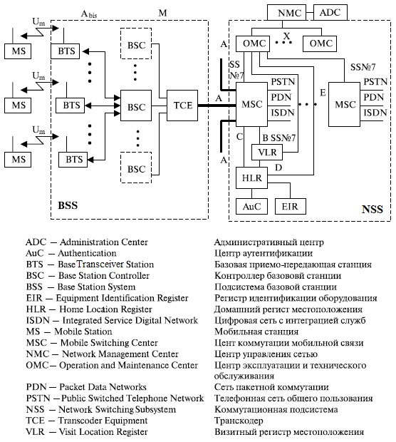
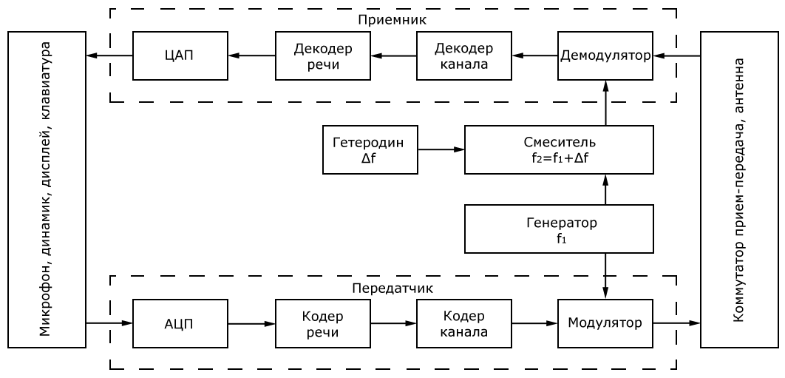

Сеть GSM состоит из нескольких функциональных объектов, функции и интерфейсы которых показаны на рис. 1.1[1-3].

Рис. 1.1. Архитектура сети и интерфейсы GSM
Сеть GSM включает три основные части:
мобильные станции (MS), которые перемещаются с абонентом;
подсистему базовых станций (BSS), которая управляет радиолинией
связи с мобильной станцией;
подсистему сети (NSS), главная часть которой — центр коммутации
мобильной связи (MSC) — выполняет коммутацию между мобильными
станциями и между мобильными или стационарными сетевыми пользователями. MSC также управляет работой, связанной с передвижением абонента.
На рис.1.1 не показан центр обслуживания, который наблюдает за надежным функционированием и изменениями на сети. Мобильная станция (MS) и подсистема базовых станций (BSS) связываются по Um-интерфейсу, также известному как "воздушный интерфейс" или радиолиния связи. Подсистема базовых станций взаимодействует с центром коммутации мобильной связи по A интерфейсу.
Мобильная станция(MS) состоит из подвижной аппаратуры (терминал) и карты с интегральной схемой, включающей микропроцессор, которая называется модулем абонентской идентификации (SIM — Subscriber Identification Module). SIM-карта обеспечивает при перемещении пользователя доступ к оплаченным услугам независимо от используемого терминала. Вставляя SIM-карту в другой терминал GSM, пользователь может принимать вызовы, делать вызовы с этого терминала и получать другие услуги [1-3].
Подвижная аппаратура однозначно определяется с помощью международного опознавательного кода мобильного оборудования (IMEI — International Mobile Equipment Identity). SIM-карта содержит международный опознавательный код мобильного абонента (IMSI — International Mobile Subscriber Identity), используемый для идентификации абонента, секретный код для удостоверения подлинности и другую информацию.IMEI и IMSI независимы — это дает возможность обеспечить наиболее вероятное опознавание личности при передвижении абонента. SIM-карта может быть защищена против неправомочного использования паролем или личным номером.
Применяются три типа оконечного оборудования подвижной станции:
МТ0 (Mobile Termination 0) — многофункциональная подвижная станция, в состав которой входит терминал данных с возможностью передачи и приема данных и речи;
МТ1 (Mobile Termination 1) — подвижная станция с возможностью связи
через терминал с ISDN;
МТ2 (Mobile Termination 2) — подвижная станция с возможностью подключения терминала для связи по протоколу МККТТ V-или Х-серий.
Терминальное оборудование может состоять из оборудования одного или нескольких типов, такого как телефонная трубка с номеронабирателем, аппаратура передачи данных (DTE), телекс и т. д.
Различают следующие типы терминалов:
ТЕ1 (Terminal Equipment — терминальное оборудование, обеспечивающее связь с ISDN;
ТЕ2 (Terminal Equipment — терминальное оборудование, обеспечивающее связь с любым оборудованием через протоколы МККТТ V- или Х-серий (связь с ISDN не обеспечивает). Терминал ТЕ2 может быть подключен как нагрузка к МТ1 (подвижной станции с возможностью связи с ISDN) через адаптер ТА.
Упрощенная схема приемо-передатчика мобильной станции приведена на рис.1.2.

Рис.1.2. Упрощенная блок-схема приемо-передатчика
мобильной станции
В состав передатчика и приемника входят следующие блоки.
В микрофоне речевой сигнал преобразуется в электрический, ширина спектра которого ограничена фильтром и составляет 4 КГц.
Аналого-цифровой преобразователь (АЦП) преобразует в цифровую форму сигнал с выхода микрофона и вся последующая обработка и передача сигнала речи производится в цифровой форме, вплоть до обратного цифро-аналогового преобразования (ЦАП) на приеме.
Кодер речи осуществляет кодирование сигнала речи в цифровой форме с целью сокращения объема информации, передаваемой по каналу связи. Декодер речи восстанавливает на приеме поступивший на него закодированный сигнал речи.
Кодер канала добавляет в сигнал закодированной речи дополнительную информацию, предназначенную для защиты от ошибок на радиоучастке. Декодер канала проверяет принятую информацию на наличие ошибок и выявленные ошибки по возможности исправляет.
Модулятор осуществляет перенос информации на несущую частоту. Демодулятор выделяет из модулированного радиосигнала несущую информацию.
Подробнее все этапы обработки будут рассмотрены в последующем изложении материала.
Подсистема базовых станций содержит два вида оборудования: базовая приемопередающая станция (BTS — Base Transceiver Station) и контроллер базовой станции (BSC — Base Station Controller) [1]. Они взаимодействуют через стандартизированный интерфейс Abis (рис.1.1).
На базовой приемопередающей станции размещается приемопередатчик, который для одной определенной соты реализует протоколы радиолинии с передвижной станцией. В большом городе обычно размещено большое количество BTS. Поэтому основные требования к BTS — прочность, надежность, портативность и минимальная стоимость.
Контроллер базовой станции управляет радиоресурсами для одного или более BTS: выбором и установлением соединения по радиоканалу, скачком частоты и хэндовером (переключением).
BSC подключается между базовой приемопередающей станцией (BTS) и центром коммутации мобильной связи (MSC).
Коммутационная подсистема сети. Центральный компонент подсистемы сети — центр коммутации мобильной связи (MSC) [1]. Он работает как обычный узел коммутации общедоступной телефонной сети (PSTN — Public Switched Telephone Network) или цифровой сети интегрального обслуживания (ISDN — Integrated Service Digital Network). Дополнительно обеспечивает все функциональные возможности мобильного абонента, такие как регистрация, аутентификация, обновление местоположения, передача соединения (хэндовер) и маршрутизация вызова при передвижении абонента. Эти функции обеспечиваются совместно несколькими функциональными объектами, которые вместе формируют подсистему сети. MSC обеспечивает подключение к фиксированным сетям (таким как общедоступная телефонная сеть PSTN или цифровая сеть интегрального обслуживания ISDN). Передача сигналов между функциональными объектами в подсистеме сети использует ОКС № 7 (SS7) — отдельный канал сигнализации, такой же, как применяется для обмена в ISDN и в сетях общего пользования.
Центр коммутации подвижной связи обслуживает группу сот и обеспечивает все виды соединений, в которых нуждается в процессе работы подвижная станция. MSC аналогичен ISDN коммутационной станции и реализует интерфейс между фиксированными сетями (PSTN, PDN, ISDN и т. д.) и сетью подвижной связи. Он обеспечивает маршрутизацию вызовов и функции управления вызовами. Кроме выполнения функций обычной ISDN коммутационной станции на MSC возлагаются функции коммутации радиоканалов. К ним относятся "эстафетная передача", в процессе которой достигается непрерывность связи при перемещении подвижной станции из соты в соту, и переключение рабочих каналов в соте при появлении помех или неисправностях.
Каждый MSC обеспечивает обслуживание подвижных абонентов, расположенных в пределах определенной географической зоны (например, Ташкент и область). MSC управляет процедурами установления вызова и маршрутизации. Для телефонной сети общего пользования (PSTN) MSC обеспечивает функции сигнализации по протоколу ОКС №7, передачи вызова или поддержки других видов интерфейсов в соответствии с требованиями конкретного проекта.
MSC формирует данные, необходимые для выписки счетов за предоставленные сетью услуги связи, накапливает данные по состоявшимся разговорам и передает их в центр расчетов (биллинг-центр). MSC составляет также статистические данные, необходимые для контроля работы и оптимизации сети. Он же поддерживает процедуры безопасности, применяемые для управления доступами к радиоканалам.
MSC не только участвует в управлении вызовами, но также управляет процедурами регистрации местоположения и передачи управления, кроме передачи управления в подсистеме базовых станций (BSS). Регистрация местоположения подвижных станций необходима для обеспечения доставки вызова перемещающимся подвижным абонентам от абонентов телефонной сети общего пользования или других подвижных абонентов. Процедура передачи вызова позволяет сохранять соединения и обеспечивать ведение разговора, когда подвижная станция перемещается из одной зоны обслуживания в другую. Передача вызовов в сотах, управляемых одним контроллером базовых станций (BSC), осуществляется этим BSC. Когда передача вызовов происходит между двумя сетями, управляемыми разными BSC, то первичное управление осуществляется в MSC. В стандарте GSM также предусмотрены процедуры передачи вызова между сетями (контроллерами), относящимися к разным MSC. Центр коммутации осуществляет постоянное слежение за подвижными станциями, используя домашний регистр местоположения (HLR) и визитный регистр местоположения (VLR).
Домашний регистр местоположения (HLR —Главный Location Register). В HLR хранится та часть информации о местоположении какой-либо подвижной станции, которая позволяет центру коммутации доставить вызов определенной мобильной станции. Практически HLR представляет собой справочную базу данных о постоянно зарегистрированных в сети абонентах. В ней содержатся опознавательные номера и адреса, а также параметры подлинности абонентов, состав услуг связи, специальная информация о маршрутизации. Ведется регистрация данных об изменении местоположения и роуминге ("блуждании") абонента, включая данные о временном идентификационном номере подвижного абонента (TMSI — Temporary Mobile Subscriber Identity) и соответствующем визитном регистре местоположения (VLR). Регистр HLR содержит международный идентификационный номер подвижного абонента (IMSI — International Mobile Subscriber Identity), состав услуг связи, специальную информацию о маршрутизации. Он используется для опознавания подвижной станции в центре аутентификации (AUC — Authentication Center).
Домашний регистр местоположения (HLR) вместе с MSC обеспечивает маршрутизацию вызова и изменения местоположения (роуминг) мобильной станции и содержит всю административную информацию каждого абонента, зарегистрированного в соответствующей сети GSM, наряду с текущим местоположением мобильных станций. Местоположение мобильных станций находится обычно в форме адреса данной мобильной станции в VLR. Фактическая процедура маршрутизации будет описана позже. Логически существует только один HLR в сети GSM, хотя он может быть реализован как распределенная база данных. К данным, содержащимся в HLR, имеют дистанционный доступ все MSC и VLR сети, и, если в сети имеются несколько HLR, в базе данных содержится только одна запись об абоненте, поэтому каждый HLR представляет собой определенную часть общей базы данных сети об абонентах. Доступ к базе данных об абонентах осуществляется по номеру IMSI (IMSI — International Mobile Station Identity) или по MSISDN-номеру подвижной станции в сети ISDN (MSISDN — Mobile Station ISDN Number). К базе данных могут получить доступ MSC или VLR, относящиеся к другим сетям, в рамках обеспечения межсетевого роуминга абонентов.
Визитный регистр местоположения (VLR — Visit Location Register). Второе основное устройство, обеспечивающее контроль над передвижением подвижной станции из зоны в зону, — визитный регистр местоположения VLR. С его помощью достигается функционирование подвижной станции за пределами зоны, контролируемой HLR. Когда в процессе перемещения подвижная станция переходит из зоны действия одного контроллера базовой станции BSC, объединяющего группу базовых станций, в зону действия другого BSC, она регистрируется новым BSC, и в VLR заносится информация о номере области связи, которая обеспечит доставку вызовов подвижной станции. Для сохранности данных, находящихся в HLR и VLR, в случае сбоев предусмотрена защита устройств памяти этих регистров.
VLR включает в себя такие же данные, как и HLR, однако эти данные содержатся в VLR только до тех пор, пока абонент находится в зоне, контролируемой VLR.
В сети подвижной связи GSM соты группируются в географические зоны (LA — Location Area), которым присваивается свой идентификационный номер (LAC — Location Area Code). Каждый VLR содержит данные об абонентах в нескольких LA. Когда подвижный абонент перемещается из одной LA в другую, данные о его местоположении автоматически обновляются в VLR. Если старая и новая LA находятся под управлением различных VLR, то данные на старом VLR стираются после их копирования в новый VLR. Текущий адрес VLR абонента, содержащийся в HLR, также обновляется.
VLR обеспечивает также присвоение номера для услуг роуминга мобильной станции (MSRN — Mobile Station Roaming Number). Когда подвижная станция принимает входящий вызов, VLR выбирает его MSRN и передает его на MSC, который осуществляет маршрутизацию этого вызова к базовым станциям, находящимся рядом с подвижным абонентом.
Во время движения подвижная станция может покинуть зону, обслуживаемую одним MSC/VLR, и переместиться в зону, которую обслуживает другой MSC/VLR. В этом случае MSC/VLR участвует в передаче управления от одного MSC/VLR к другому. Он также присваивает новый временный мобильный опознавательный код станции TMSI (Temporary Mobile Subscriber Identity) и передает его в HLR. Новый MSC/VLR инициирует процедуру установления подлинности абонента и его оборудования. Кроме случая, когда подвижный абонент меняет зону местоположения, временный номер может периодически изменяться по решению оператора с целью защиты от злонамеренного перехвата номеров участников разговора. В этом случае процедура изменения идет также с использованием VLR, для доступа к VLR могут использоваться идентификационные номера IMSI, TMSI и MSRN.
В общем VLR можно считать локальной базой данных в данной зоне, которая содержит информацию о подвижном абоненте.
Применение VLR позволяет сократить число запросов HLR, и это снижает сетевой трафик и уменьшает время обслуживания.
Внутренние интерфейсы GSM.
Интерфейс между MSC и BSS (А – интерфейс) обеспечивает передачу сообщений для управления BSS, передачи вызова, управления передвижением. А – интерфейс объединяет каналы связи и линии сигнализации. Последние используют протокол SS N7 МККТТ. Полная спецификация А – интерфейса соответствует требованиям серии 08 Рекомендаций ETSI/GSM.
Интерфейс между MSC и HLR совмещен с VLR (В – интерфейс). Когда MSC необходимо определить местоположение подвижной станции, он обращается к VLR. Если подвижная станция инициирует процедуру место определения с MSC, он информирует свой VLR, который заносит всю изменяющуюся информацию в свои регистры. Эта процедура происходит всегда, когда MS переходит из одной области место определения в другую. В случае, если абонент запрашивает специальные дополнительные услуги или изменяет некоторые свои данные, MSC также информирует VLR, который регистрирует изменения и при необходимости сообщает о них HLR.
Интерфейс между MSC и HLR (С – интерфейс) используется для обеспечения взаимодействия между MSC и HLR. MSC может послать указание (сообщение) HLR в конце сеанса связи для того, чтобы абонент мог оплатить разговор. Когда сеть фиксированной телефонной связи не способна исполнить процедуру установления вызова подвижного абонента, MSC может запросить HLR с целью определения местоположения абонента для того, чтобы послать вызов MS.
Интерфейс между HLR и VLR (D – интерфейс) используется для расширения обмена данными о положении подвижной станции, управления процессом связи. Основные услуги, предоставляемые подвижному абоненту, заключаются в возможности передавать или принимать сообщения независимо от местоположения. Для этого HLR должен пополнять свои данные. VLR сообщает HLR о положении MS, управляя ею и переприсваивая ей номера в процессе блуждания, посылает все необходимые данные для обеспечения обслуживания подвижной станции.
Интерфейс между MSC (Е – интерфейс) обеспечивает взаимодействие между разными MSC при осуществлении процедуры HANDOVER –"передачи" абонента из зоны в зону при его движении в процессе сеанса связи без ее перерыва.
Интерфейс между BSC и BTS (A - bis интерфейс) служит для связи BSC с BTS и определен Рекомендациями ETSI/GSM для процессов установления соединений и управления оборудованием, передача осуществляется цифровыми потоками со скоростью 2,048 Мбит/с. Возможно использование физического интерфейса 64 кбит/с.
Интерфейс между BSC и ОМС (О – интерфейс) предназначен для связи BSC с ОМС, используется в сетях с пакетной коммутацией МККТТ Х.25.
Внутренний BSC-интерфейс контроллера базовой станции обеспечивает связь между различным оборудованием BSC и оборудованием транскодирования (ТСЕ); использует стандарт ИКМ –передачи 2,048 Мбит/с и позволяет организовать из четырех каналов со скоростью 16 кбит/с или один канал на скорости 64 кбит/с.
Интерфейс между MS и BTS (Um - радиоинтерфейс) определен в сериях 04 и 05 Рекомендаций ETSI/GSM.
Сетевой интерфейс между ОМС и сетью, так называемый управляющий интерфейс между ОМС и элементами сети, определен ETSI/GSM Рекомендациями 12.01 и является аналогом интерфейса Q.3, который определен в многоуровневой модели открытых сетей ISO OSI. Соединение сети с ОМС могут обеспечиваться системой сигнализации МККТТ SS N7 или сетевым протоколом Х.25. Сеть Х.25 может соединяться с объединенными сетями или с PSDN в открытом или замкнутом режимах.
GSM - протокол управления сетью и обслуживанием также должен удовлетворять требованиям Q.3 интерфейса, который определен в ETSI/GSM Рекомендациях 12.01.
Интерфейсы между сетью GSM и внешним оборудованием.
Интерфейс между MSC и сервис – центром (SC) необходим для реализации службы коротких сообщений. Он определен в ETSI/GSM Рекомендациях 03.40.
Интерфейс к другим ОМС. Каждый центр управления и обслуживания сети должен соединяться с другими ОМС, управляющими сетями в других регионах или другими сетями. Эти соединения обеспечиваются Х – интерфейсами в соответствии с
Рекомендациями МККТТ М.3О. Для взаимодействия ОМС с сетями высших уровней используется О.3 – интерфейс.
Интерфейсы с внешними сетями
Соединение с PSTN
Соединение с телефонной сетью общего пользования осуществляется MSC по линии связи 2 Мбит/с в соответствии с системой сигнализации SS N 7. Электрические характеристики 2 Мбит/с интерфейса соответствуют Рекомендациям МККТТ G.732.
Соединение с ISDN
Для соединения с создаваемыми сетями ISDN предусматриваются четыре линии связи 2 Мбит/с, поддерживаемые системой сигнализации SS N 7 и отвечающие Рекомендациям Голубой книги МККТТ Q.701-Q.710, Q.711-Q.714, Q.716, Q.781, 0.782, 0.791, 0.795, 0.761-0.764, 0.766.
Соединение с существующей сетью NMT-450
Центр коммутации подвижной связи соединяется с сетью NMT-450 через четыре стандартные линии связи 2 Мбит/с и системы сигнализации SS N7. При этом должны обеспечиваться требования Рекомендаций МККТТ по подсистеме пользователей телефонной сетью (TUP – Telephone User Part) и подсистеме передачи сообщений (МТР – Message Transfer Part) Желтой книги. Электрические характеристики линии 2 Мбит/с соответствуют Рекомендациям МККТТ G.732.